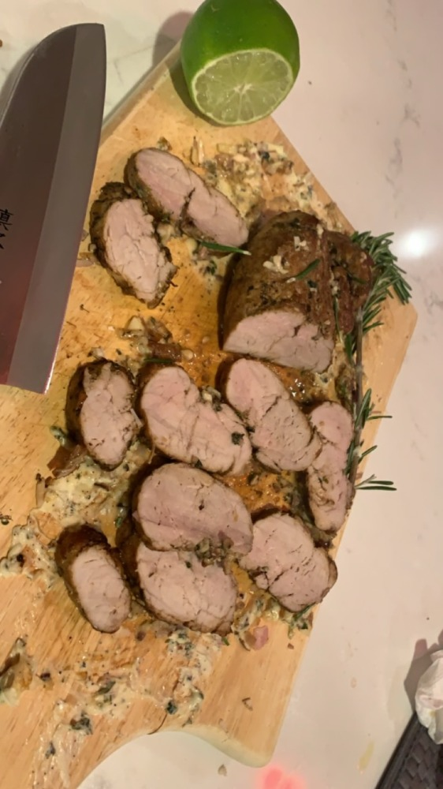
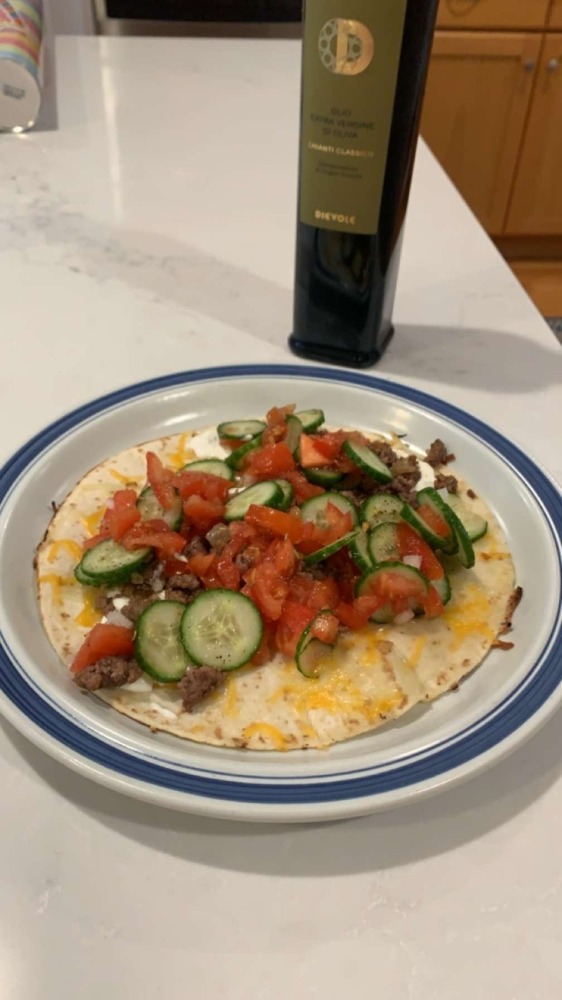
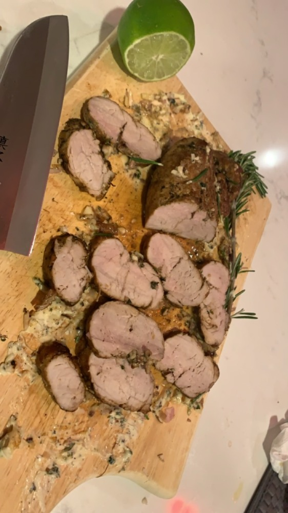
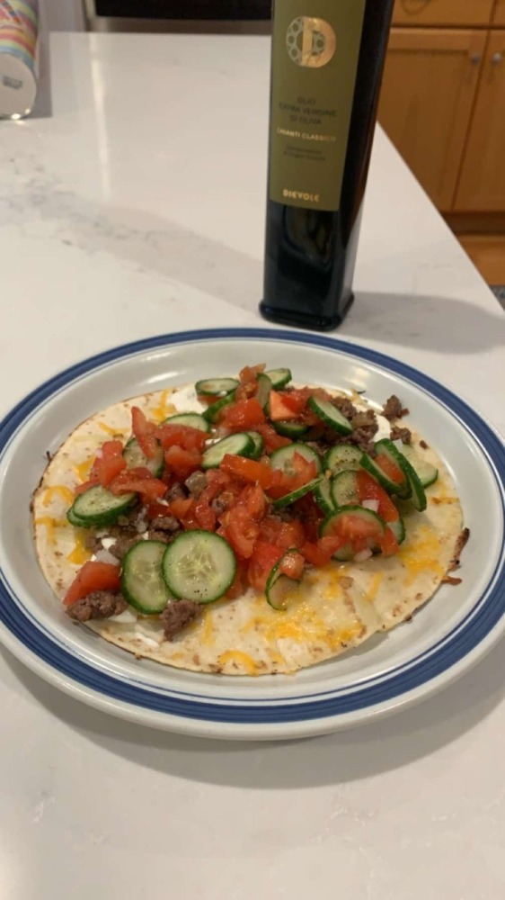
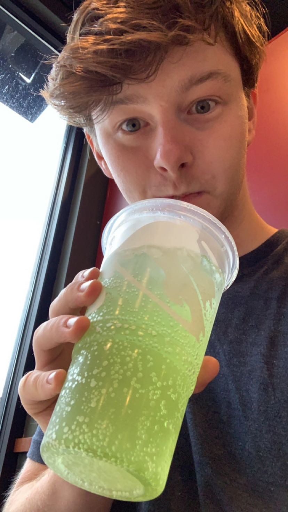
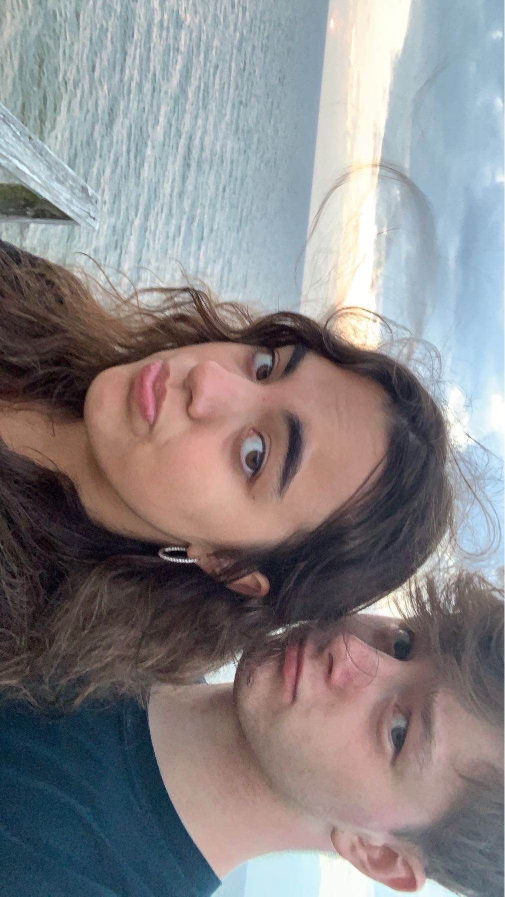
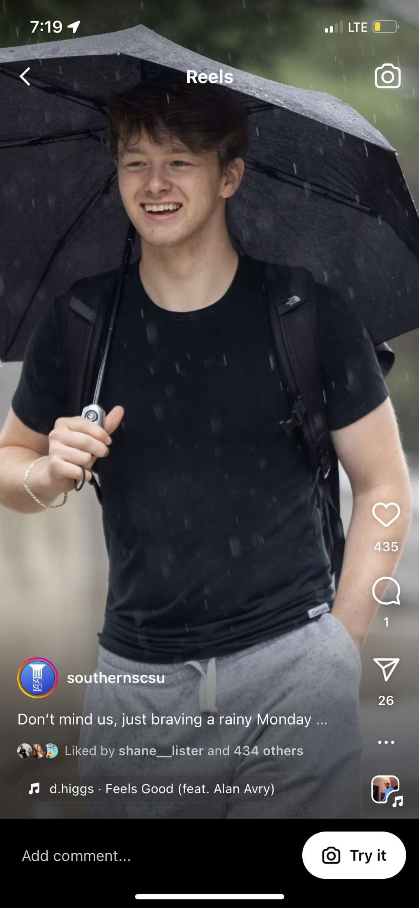
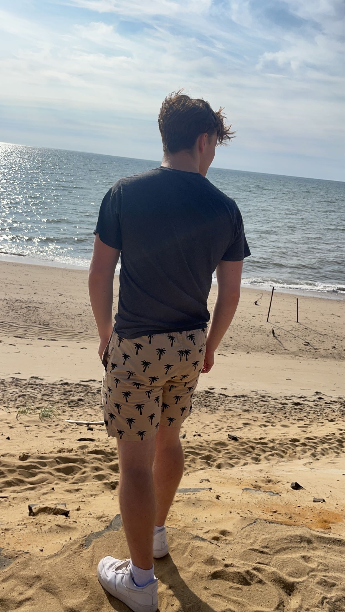
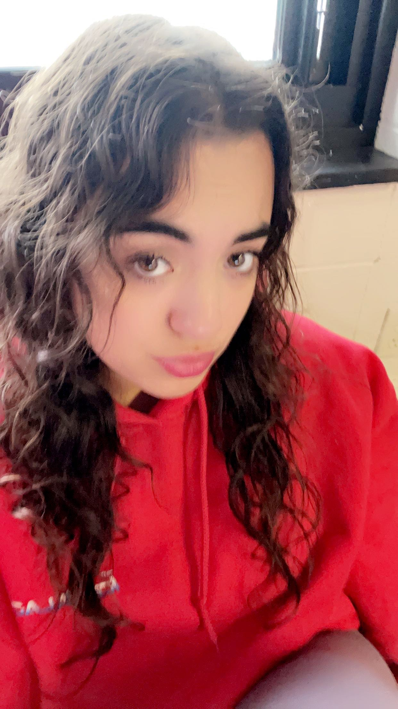
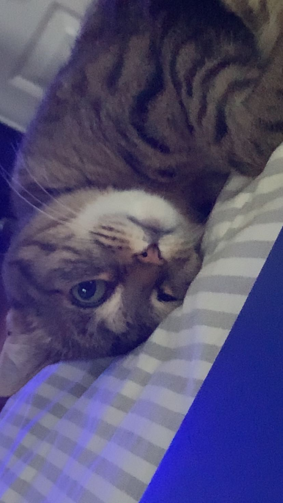

--greeting--
Skills and Hobbies
 



- Computer Science
- Gardening
- Cooking
- Geopolitics
- Management
This summer I picked up gardening as my other hobby, and it compliments
my cooking well! In the picture on the left you'll see a raised garden.
this summer I grew tomatoes, basil, garlic, lavendar, oregano, chives,
sage, marigolds, and mint. This year was very rainy so my tomatoes didnt
come out well. Yet, all my other spices did fantastic! I cant wait to
get my garden ready for the next spring. I actually purposefully grew
spices that have synergies with eacother. Basil, chives, and marigolds
work in harmony to prevent pests from eating the tomatoes. Marigolds
smell unplesant to bugs, chives are unplesant smelling to deer, and
basil serves as defense for the tomatoes because bugs will eat it before
the tomatoes.
Cooking is one of my favorite hobbies. My suitemates are blessed with
delicious food nearly every night due to my hobby. My family has always
been big on cooking with my father teaching me simple chicken cutlets
and pasta at a young age. However my passion of cooking has been mostly
self developed in the last year with my father having gone to florida
when i was 16.
About Me





My name is Connor Reed. Im currently a student at Southern
Connecticut State University. My major is Interdisciplinary studies
where I combine 3 minors into a major. I chose Computer Science,
History, and Managent. Together they each have a roll in building my IDS
major.
In highschool I had to run my father's carwash, and I learned that I
love to find unique solutions to complicated problems. However more
importantly I learned the best way to manage others is to divide and
conquer, giving each teammate a role they enjoy and take pride in doing.
I strongly belive a workplace should thrive to grow a strong team who
support one another.
At Southern Connecticut State University I met my girlfriend, Luisa, in
the picture on the right we were at cape cod for vacation. She also
shares my love of tacobell and baja blast. She is going to SCSU to
become a speech language pathologist (For those of us who dont speak
medical lingo, she is a speech therapist). Luisa is Italian and lives in
the Bronx, NYC. Despite this, I am the chef of the relationship,
although I am also Italian. Speaking of cooking. Cooking is one of my
favorite hobbies. My suitemates are blessed with delicious food nearly
every night due to my hobby. My cousin who also goes to SCSU has tried
to come over the last 3 nights because I invited her over for dinner
once and now Connecticut hall isnt good enough for her tastes. I
reluctantly havent had left overs for the last week.

Education and Experience
| Education |
Degree |
Institution |
| 2019-2023 |
B.A. in Interdisciplinary Studies |
Southern Connecticut State University |
| 2023-present |
Professional Development |
Various Online Courses |
×